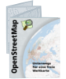

OpenStreetMap - Deutschland
Kontakt / Impressum
Presse-Ansprechpartner
Bei OpenStreetMap gibt es keine offiziellen Ansprechpartner. Die folgenden Personen haben sich aber bereit erklärt, Presseanfragen zu beantworten:
Region: Hamburg
michael@buegehome.de
0163-16 43 00 8
Torsten Steiner
Region: Augsburg
torsten_steiner@gmx.de
09071-77 49 10 1 Matthias Blazejak
Region: Ruhrgebiet
osm@blazejak.de
02325-97 56 34 5 Pascal Neis
Region: Hessen (Wiesbaden/Frankfurt)
pascal@neis-one.org
Region: Saarland/Trier
mail@roland-ramthun.de
0651-20 65 06 9 Matthias Meißer
Region: Mecklenburg Vorpommern
digi_c@arcor.de Andreas Labres
Region: Österreich
presse@lab.at
+43-664-30 00 95 9
Behörden und andere öffentliche Stellen
Ansprechpartner für Behörden und andere öffentliche Stellen ist:
Joachim Kast
kast@openstreetmap.de
GPS-Verleih
Wenn Du Dich für den GPS-Verleih interessierst, kannst Du Dich an gps-verleih@openstreetmap.de wenden.
Flyer
{kind=link}
Der OpenStreetMap-Flyer im DIN A7-Format eignet sich zum Verteilen bei Veranstaltungen. Man kann sich auch ein paar in die Tasche stecken, wenn man zum Mappen unterwegs ist - so ist die Frage, was man denn da tut, schnell beantwortet! Auf diesem Bild kannst Du sehen, wie der Flyer aussieht.
Die Geofabrik GmbH sponsort den Druck der Flyer (bislang wurden ca. 40.000 hergestellt). Solange der Vorrat reicht, können die Flyer kostenlos in Mengen von ca. 10, ca. 100 und ca. 200 Stück (passt dann vom Gewicht genau in verschieden Briefgrößen) von der Geofabrik angefordert werden. Wende Dich an Frederik Ramm (frederik.ramm@geofabrik.de).
Ein Beispiel, wie der Flyer eingesetzt wurde.
Webseiten
Wenn Du Fragen oder Anregungen zu diesen Webseiten hast, kannst Du den Webmaster unter webmaster@openstreetmap.de erreichen.
Impressum
Eigentümer der Domain openstreetmap.de ist:
FOSSGIS e.V.
Siemensstraße 37
14482 Potsdam
www.fossgis.de
info@fossgis.de